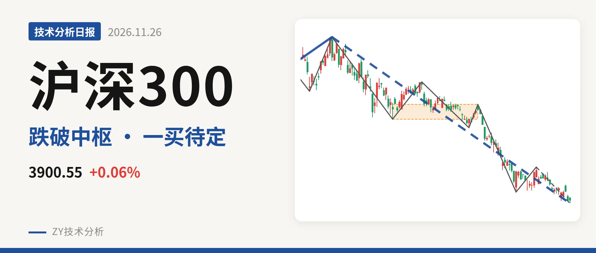
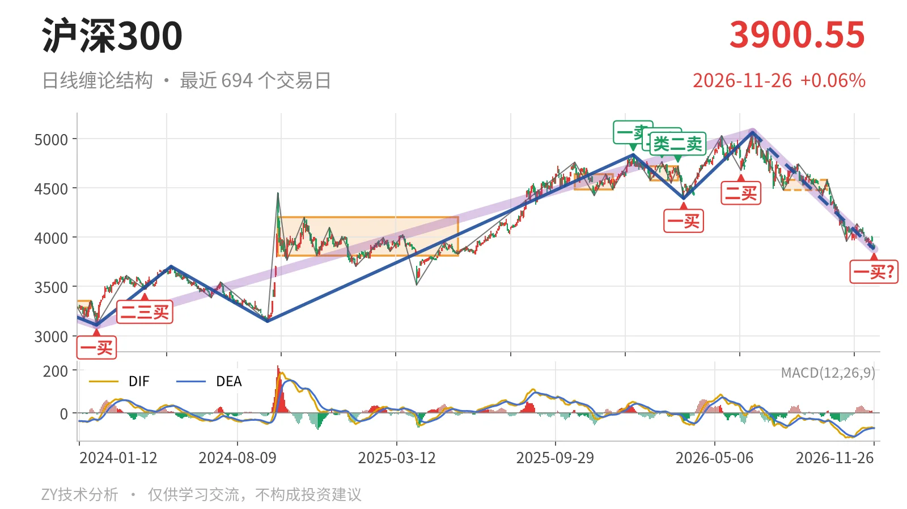
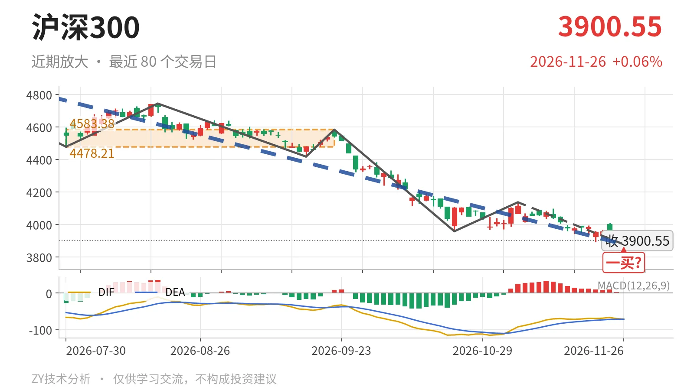

沪深300｜中枢下沿4478跌破，暂定一买出现

最近日线中枢 4478.21—4583.38点，收盘位于中枢之下
一句话：新低不新弱，暂定一买，弱势未改。
🧭 走势结构：上涨段未见结束，下跌段仍主导
日线级别当前仍处6月23日以来的下跌线段中，这段下跌还没出现反转结构。更大级别看，2024年2月2日至2026年6月23日的上涨段上涨约63%，至今没有确认结束；但6月23日以来的回落已经跌去约23.4%，成为近几个月的主导段。3月24日至6月23日的上涨线段已经结束，6月23日以来的日线下跌线段内含7笔，到11月26日仍在延续。大级别上涨未被破坏，但日线结构由下跌段主导。

📍 中枢与位置：跌破最近中枢，中枢下移
最新收盘3900.55点低于7月30日至9月22日日线笔中枢下沿4478.21点约12.9%，处在最近中枢下方。该中枢区间为4478.21—4583.38点，中轴4530.80点。从2025年10月中枢中轴4562点、2026年2月4650点、到7月4531点，日线笔中枢整体下移。下方有2024年10月8日至2025年5月30日的中枢3812.32—4200.91点，当前价格仍在该中枢内部，但已低于其中轴4006.61点。
🕯️ 买卖点：今日一买为暂定，老买点级别已被压缩
11月26日的3877.82点日线一买属于盘整背驰，但所在11月5日至11月26日下跌笔还没结束，所以这是暂定的一买，会随这一笔延续而变化。此前1月13日一卖4836.95点、2月25日二卖4766.56点、3月17日类二卖4720.86点一个比一个低。3月24日一买4394.29点和6月8日二买4677.57点之后，行情都创了新低，这两个买点只能看作较小级别买点。

📊 背驰：新低不新弱，绿柱与DIF同步收缩
当前下跌笔与9月22日至10月23日那笔下跌比较，是新低不新弱。价格从3958.14点继续下移到3877.82点，但DIF低点由-115.1抬至-92.5，绿柱面积由494缩到0，下跌力度没有同步放大。因为11月5日以来的这笔下跌还在延续，这个盘整背驰只能作为暂定依据；若后续DIF低点跌破-115.1或绿柱面积重新超过494，该背驰结构就被破坏。
🧭 关键位置观察：4478点与3812点决定强弱
结构偏弱，弱在最新价位于最近中枢下方且反弹尚未站回4478点。反抽若回不到4478点上方，对7月30日至9月22日中枢构成三卖；重新站上4478点，下跌更可能只是中枢扩展。下方3812点附近是2024年10月8日至2025年5月30日中枢下沿，跌破该位置则下跌段继续向下延伸。在站回4478点之前，反弹只能按弱势反抽对待。
⚠️ 本文为基于公开行情数据的缠论技术结构记录，由程序自动计算并生成，仅供学习交流，不构成任何投资建议。市场有风险，投资需谨慎。